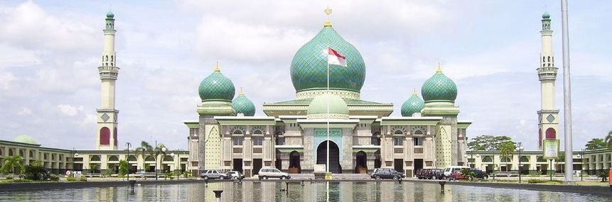

Tentang Masjid Annur

Mesjid Agung An Nur berdiri tanggal 27 Rajab 1388 H atau bertepatan dengan tanggal 19 Oktober 1968, Masjid Agung An-Nur diresmikan oleh Arifin Ahmad, Gubernur Riau waktu itu dan tahun 2000 pada masa gubernur Saleh Djasit mesjid ini direnovasi secara besar-besaran.
Masjid Agung An-Nur Riau yang kita saksikan begitu megah saat ini bukanlah bangunan asli hasil pembangunan tahun 1966 dan diresmikan tahun 1968. Tapi merupakan bangunan hasil renovasi total dan pembangunan kembali dari masjid Agung An-Nur yang lama.
Di pergantian milenium tahun 2000 lalu, pada saat Riau dibawah kepemimpinan gubernur Shaleh Djasit, Masjid Agung An-Nur yang lama di rombak total ke bentuknya saat ini.
Dari pembangunan tahun 2000 tersebut luas lahan masjid ini bertambah tiga kali lipat dari sebelumnya yang hanya seluas 4 hektare menjadi 12.6 hektare. Luasnya lahan masjid baru ini memberikan keleluasaan bagi penyediakan lahan terbuka untuk publik Pekanbaru termasuk di dalamnya kawasan taman nan hijau dan lahan parkir yang begitu luas.
Dalam sejarahnya Masjid Agung An-Nur pernah menjadi kampus bagi Fakultas Ushuluddin Institut Agama Islam Negeri (IAIN) Sultan Syarif Kasim Pekabaru di awal pendiriannya hingga tahun 1973. IAIN Sultan Syarif Kasim kini Menjadi Universitas Islam Negeri Sultan Syarif Kasim (UIN SUSKA) Pekanbaru
(Sumber : id.wikipedia.org/wiki/Masjid_Agung_An-Nur )